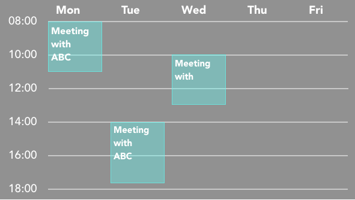

Social Distance Detection
Please keep social distance in the office!
System will infrom you when your distance is too close to others!
| Work Schedule |
|---|
|  |
| Chat Room |
|
Hi, Angela.
Welcome to SAffice:) . Hi, SAffice ! .
|